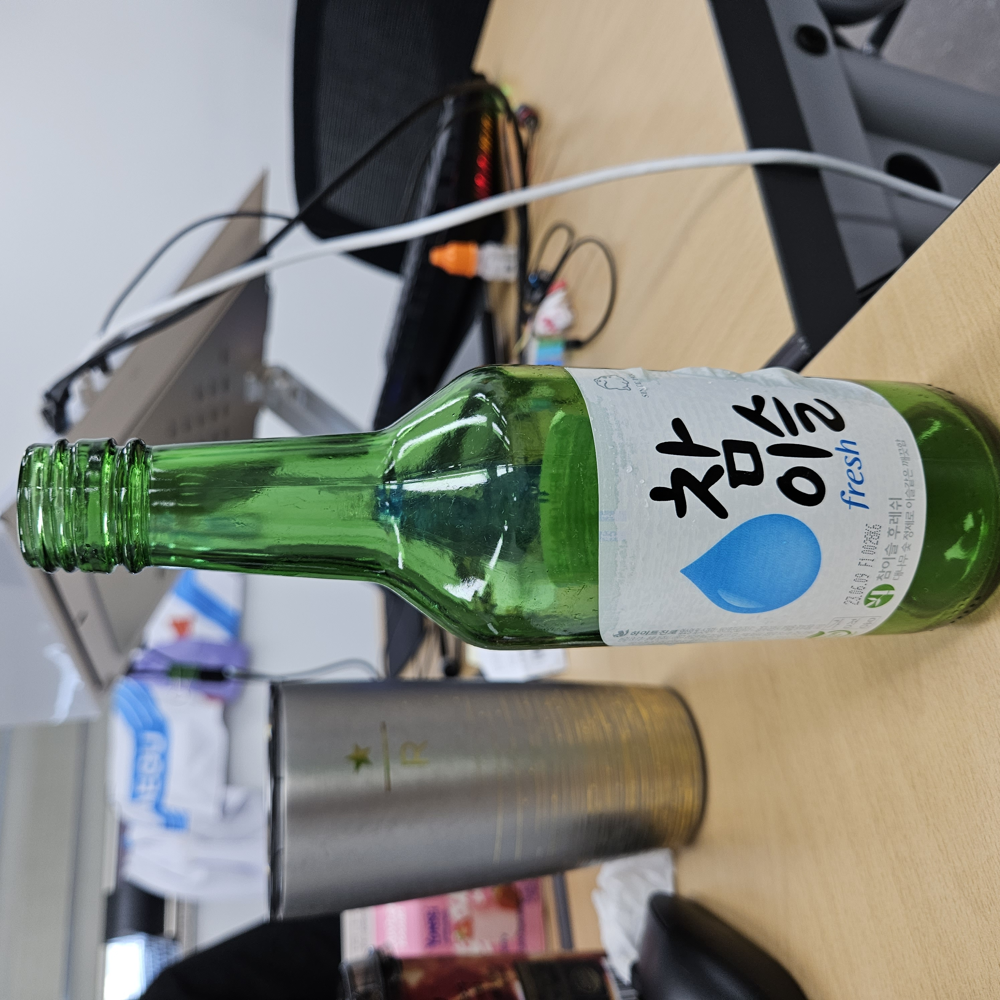
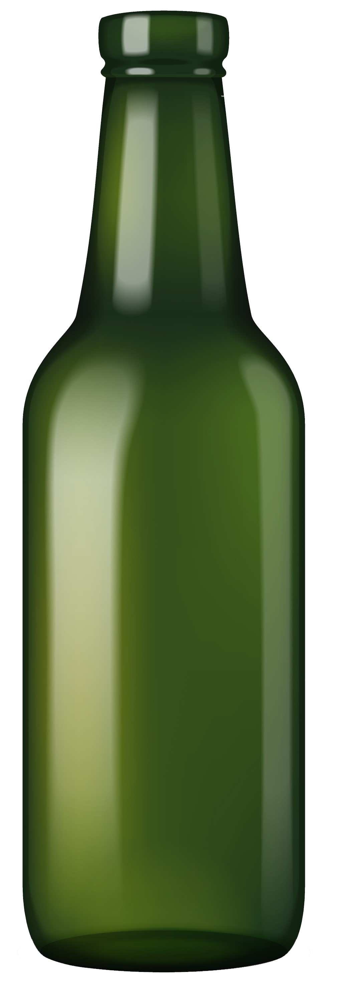
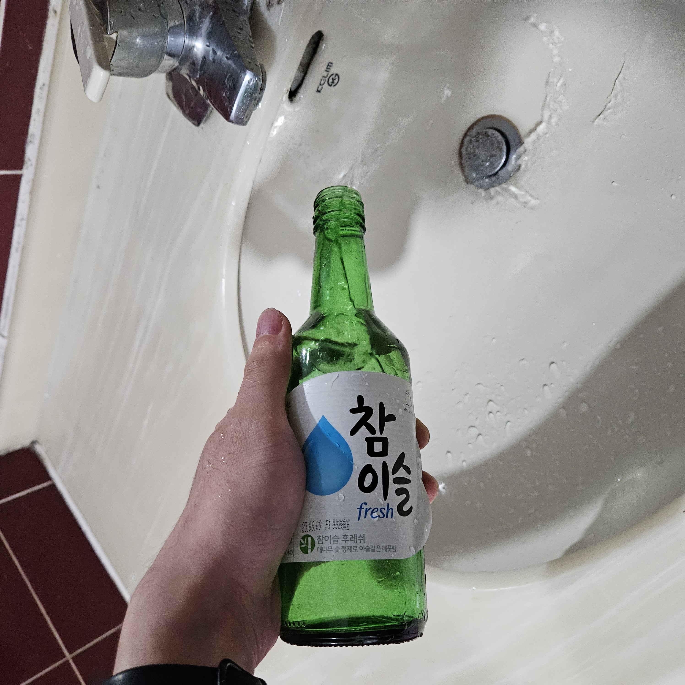
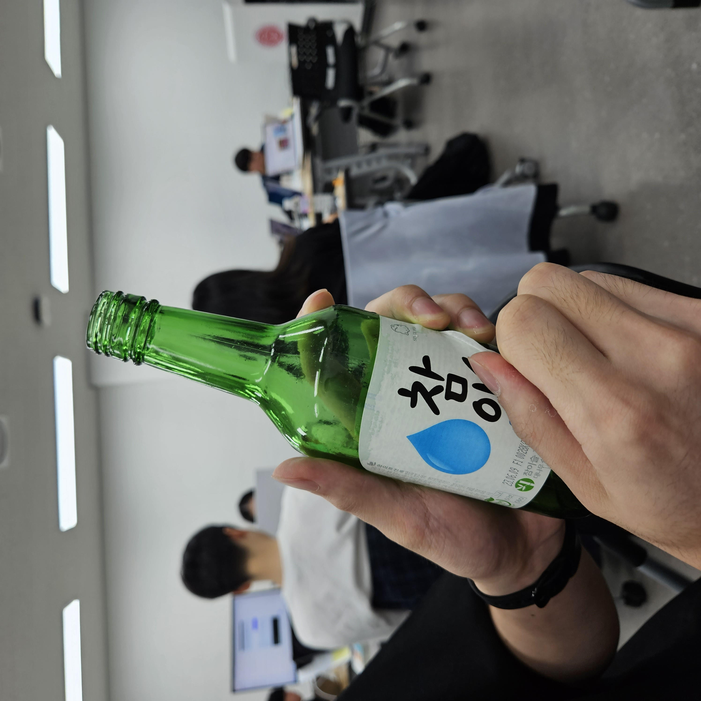
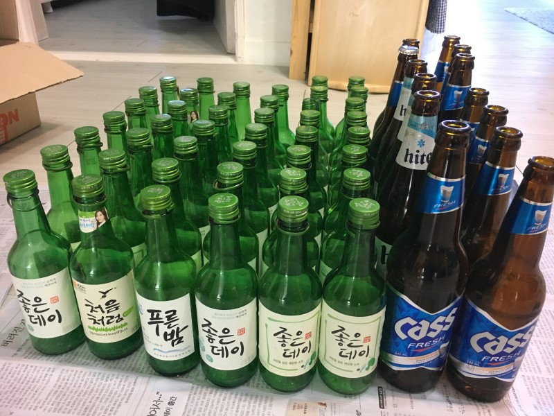
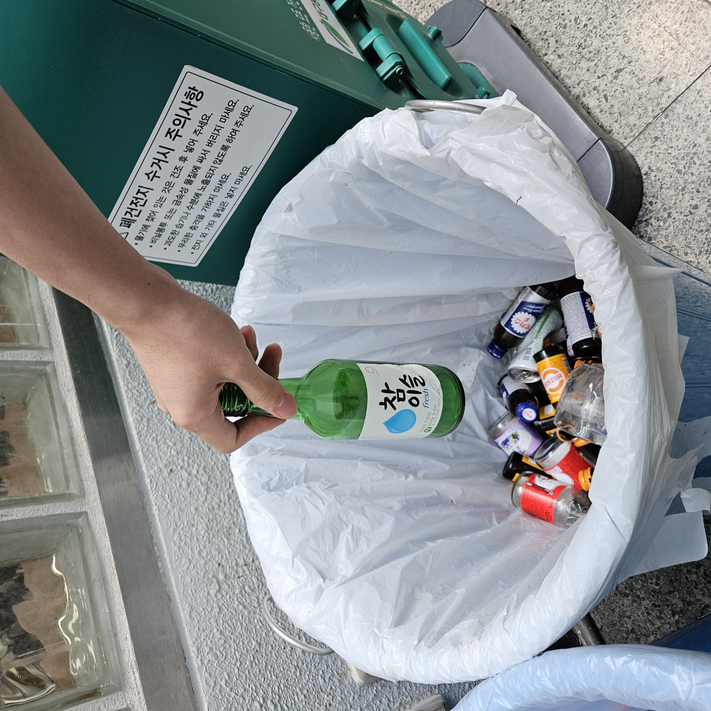

유리병 분리배출 가이드

이 쓰레기는 "유리병"으로 분리해요

유리병은 어떤 종류의 쓰레기인가요?
"유리병은 일상생활에서 자주 사용하는 재료인 유리로 만들어져 있고 재활용이 가능해요!"
비우기:
유리병 안에 남아있는 내용물과 이물질을 모두 비워요. 
세척하기:
물로 깨끗이 세척한 후 충분히 말려요.
라벨제거하기:
다른재질 라벨, 뚜껑, 이물질을 제거해주세요. 
분류하기:
색깔별로 유리병을 분류해요. 
분리배출:
색깔별로 유리병 배출장소에 맞춰 유리류 재활용통에 버려요. 